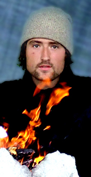

 |
Marius Høver Montarou
Jeg har, etter å ha gått sammenhengende på skole siden jeg var 7 (16 år!), funnet ut at det er på tide med en pause for å gjøre det jeg helst vil. Og hva passer vel bedre å bruke to semestre til enn å krysse landet til beins? Det blir et vanvittig eventyr! Liker | studiet mitt, musikk, Saaben min, gode produkter, gitaren min, å være på langtur i skog, fjell og vidde, være oppe om natten, se film, å drikke melk med sjokolade i munnen, den første slurken av en glasscola. Liker ikke | å stå opp tidlig, sitte på buss i 8 timer, ting som ikke fungerer, dårlige løsninger, stress, å drikke vann istedenfor melk til frokost fordi jeg ikke har mer melk igjen, den siste slurken av en 1,5 liters colaflaske. Ellers er jeg på evig søken etter storørret, villmarkssus og nye utfordringer. Til daglig bor jeg i Trondheim og jobber på XXL ved siden av studiet. |